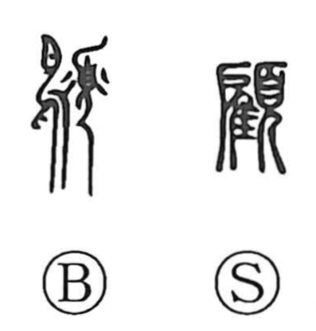

顧

Uncategorized
Kun: kaerimiru | On: ko
to look back ・ to reflect ・ to show consideration ・ to take to heart
Explanation
顧 combines 雇 and 頁. 頁 shows, in profile, a person wearing a ritual cap and bowing in reverence. 雇 depicts placing a short‑tailed bird before the divine tablet to perform bird divination and seek the god’s will. Together they portray reverently receiving a divine pronouncement. From this sacred act arise senses of grace and of holding something deeply in mind (as in 顧念). These then extend to human affairs: to show mercy or consideration, to be mindful, and, by further extension, to look back or turn around in reflection upon what has been revealed.